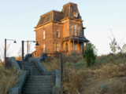
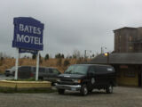
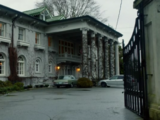
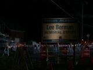
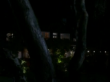

ამ კატეგორიის გვერდზე მოყვანილია ყველა ის ადგილმდებარეობა, რომელთაც სერიალის განმავლობაში ვხვდებით.
პოპულარული გვერდები
-

თეთრი ფიჭვების ყურე -
 ბეიტსების ოჯახის სახლი -
 ბეიტსის მოტელი -
 პაინვიუს კლინიკა -
თეთრი ცხენის ბარი -
 ლი ბერმანის მემორიალური გზატკეცილი -
 არკანუმის კლუბი (ჯენტლმენთა კლუბი) -

დილანის ფერმა
ყველა გვერდი (27)
ა
ბ
D

L

N

P


R

S


T


V

W


Community content is available under CC-BY-SA unless otherwise noted.